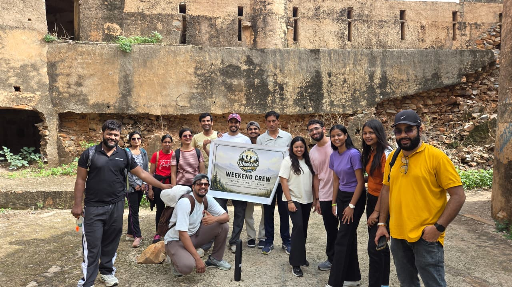
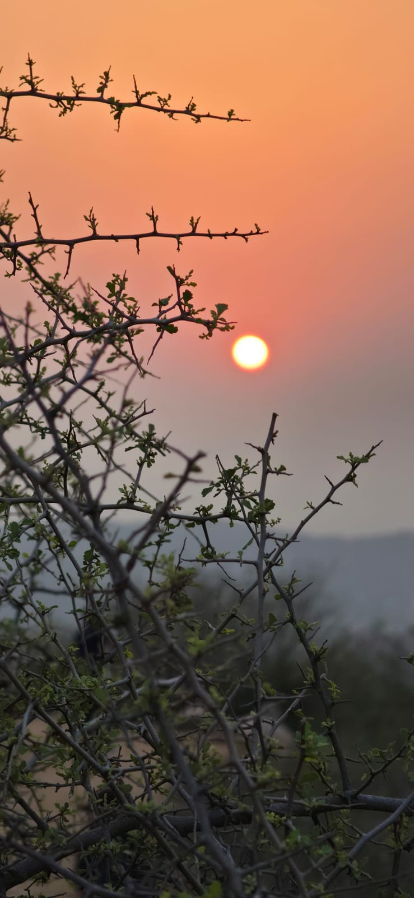

Sunrise & sunset hikes
Early starts, golden light and carefully selected hill routes around Jaipur and the Aravallis.
Weekend treks, sunrise hikes, nature walks and offbeat outdoor experiences across Jaipur and Rajasthan—built for solo explorers, friend groups and teams.
Weekend Crew is a Jaipur-based trekking, travel and adventure community created for people who want to make their weekends more exciting. We discover hidden and lesser-known locations instead of repeating the same popular trails.
Whether you arrive with friends or join solo, the idea is simple: explore a new place, meet good people and return with a story worth telling.


Early starts, golden light and carefully selected hill routes around Jaipur and the Aravallis.
Lesser-known forts, hilltops, forest paths and landscapes beyond the usual weekend checklist.
Games, music, conversations, photography and shared refreshments make every outing social.
Custom outdoor experiences designed for friend circles, teams, colleges and communities.
Real frames from Weekend Crew explorations around Jaipur and Rajasthan.
Loading trail stories…
Weekend Crew accepts enquiries for outdoor experiences across Rajasthan. Routes, difficulty, timing, inclusions, transport and safety instructions vary by event and are confirmed before booking.
Yes. Solo participants are welcome. Group activities are designed to help people connect naturally during the experience.
Weekend Crew is based in Jaipur and explores routes across Rajasthan. Each event announcement confirms the destination and meeting point.
Inclusions can vary and may cover guided exploration, activities, photography moments, snacks or refreshments. Transport and meals should be confirmed for the selected event.
Share your fitness level and any health concerns before booking. The organizer will confirm route difficulty, footwear, water, timing and event-specific safety guidance.